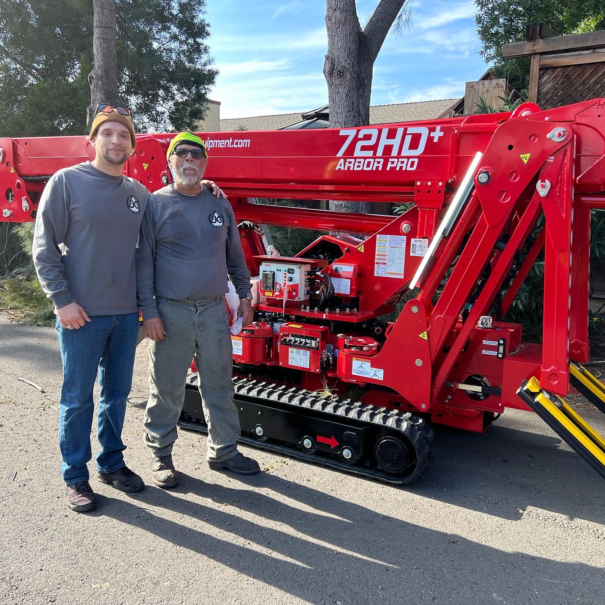
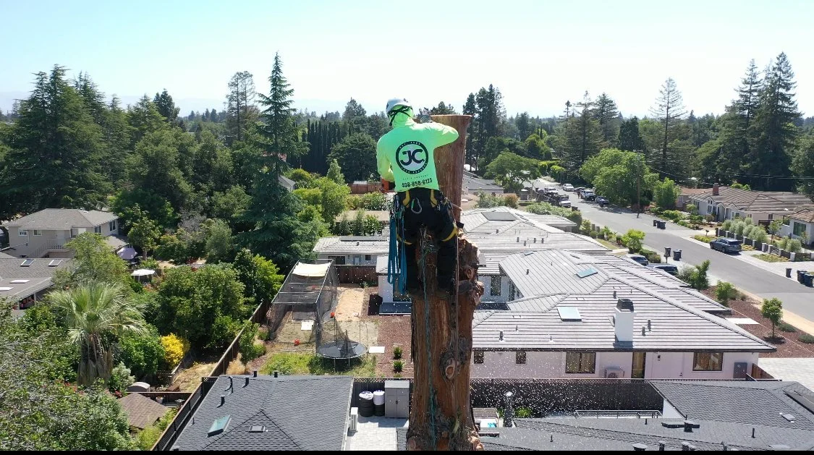

Our Story
Nearly Four Decades
of Honest Work
JC Tree Experts was founded in San Jose in 1986 by Javier Castaneda Sr. and his wife. What started as a small, local tree service has grown into one of the South Bay's most trusted names in professional arboriculture — built entirely on word-of-mouth, honest pricing, and quality work.
Today, Javier Sr. runs the business alongside his son, Javier Castaneda Jr., who serves as Field Operations Manager and holds ISA Certified Arborist credentials. Together, they lead a team that shares the same values the company was founded on: integrity, craftsmanship, and care for the community.
We serve a 30-mile radius around San Jose, covering the entire South Bay Area. We work with homeowners, HOAs, commercial property managers, and municipalities.
"We'll never pressure or scare you into unnecessary services. Our goal is to give you an honest evaluation and the best solution for your trees."

